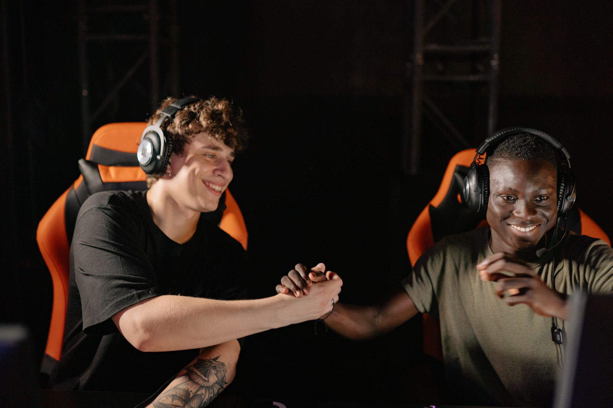

The challenge of roster integration
In the high-stakes world of professional Counter-Strike, roster changes are often seen as quick fixes to declining performance. However, as FaZe Clan has discovered, bringing in a player like r1nkle is not as simple as just swapping a name on a jersey. The tactical cohesion built over years of playing together cannot be replaced overnight, and the friction between established systems and new individual styles is inevitable.
huNter- recently addressed the media regarding the team's internal dynamics. He highlighted that while the organization is fully committed to making the transition successful, there are fundamental aspects of the FaZe way of playing that are non-negotiable. The goal is to find a middle ground where the new player can shine without dismantling the core identity that has made the team a global powerhouse.
Balancing team structure and individual comfort
One of the most difficult aspects of coaching and team leadership is deciding when to bend the rules for a star player. r1nkle brings a unique set of skills and a specific way of reading the game that differs from his predecessors. To get the best out of him, the team must adapt, but they cannot do so at the expense of the collective structure.
We cannot change everything to make r1nkle comfortable, but we are trying to implement his things.
This statement from huNter- encapsulates the delicate balancing act currently taking place within the FaZe bootcamp. It is a philosophy of incremental change rather than total overhaul. By slowly incorporating r1nkle's preferred utility usage, positioning, and timing, the team hopes to create a hybrid style that leverages his strengths while maintaining their legendary tactical discipline.
Tactical adjustments in the modern era
The modern Counter-Strike 2 meta requires players to be incredibly versatile. A player cannot simply sit in a corner and wait for kills; they must understand complex executes and deep-layered utility setups. For a new player, learning these nuances is a massive undertaking. The team is currently focusing on several key areas to facilitate this growth:
These adjustments are not merely about comfort; they are about efficiency. If a player feels forced into a role that contradicts their natural instincts, their reaction time and decision-making suffer. By implementing 'his things,' as huNter- puts it, FaZe is essentially trying to reduce the cognitive load on r1nkle, allowing him to play more instinctively during intense tournament moments.
The long term vision for FaZe Clan
Success in esports is rarely a linear path. FaZe Clan has faced periods of dominance followed by periods of adjustment. The current phase is a classic example of the growing pains associated with maintaining a top-tier roster. The management and the players themselves understand that the results might not be immediate, but the foundation being laid now is critical for future trophies.
The ultimate objective is to reach a point where the roster feels like a single, cohesive unit once again. This requires patience from the fans, the coaching staff, and most importantly, the players themselves. huNter-'s transparency regarding these struggles is a sign of a mature team that is willing to face its difficulties head-on rather than masking them with empty optimism.
Looking at the broader esports landscape
While FaZe Clan navigates these tactical shifts, the rest of the competitive scene continues to move at a breakneck pace. Every major organization is constantly tweaking their rosters and strategies to stay ahead of the curve. We see this pattern repeated across different titles, from CS2 to League of Legends and even in the rising popularity of competitive gaming formats.
As teams strive for perfection, we see incredible displays of skill and coordination. For instance, seeing how professional teams maintain dominance through consistent performance is inspiring. If you enjoyed reading about team victories and roster management, you might also be interested in how other top organizations are performing, such as in the recent coverage of how NIP Wins ROG Journey Title for Second Straight Victory, which highlights the importance of stability in professional play.
See Also
If you enjoyed this Esports News article, check out NIP Wins ROG Journey Title for Second Straight Victory for more useful reading.